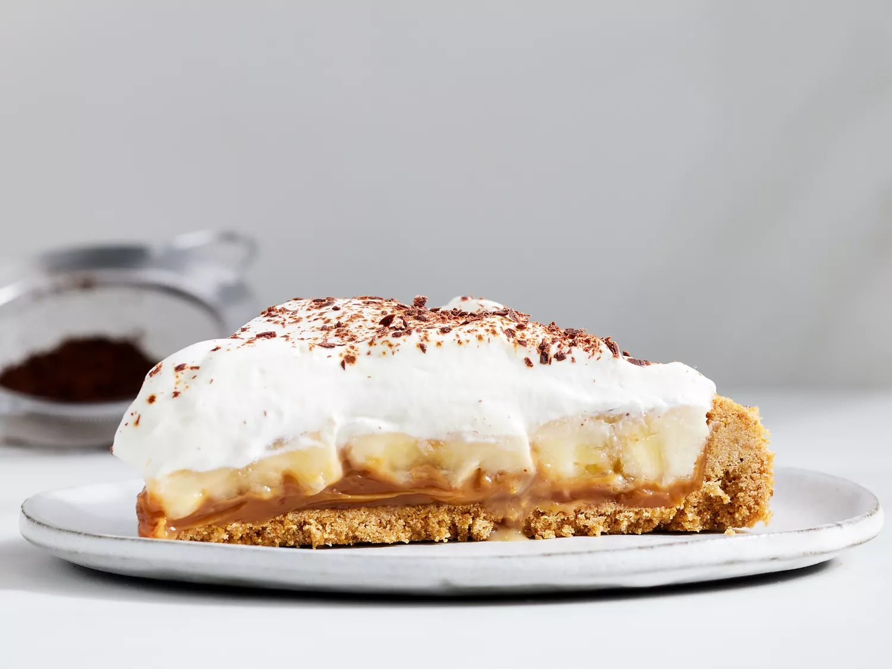

Banoffe pie

Description
Banoffee pie has gooey toffee, banana, and crunchy graham crackers in every bite. It's an incredibly rich and delicious dessert, so a little goes a long way, but anyone who tries it loves it!
(text from Allrecipes).
Ingredients
- Dulce de leche: Use canned dulce de leche or make your own at home.
- Graham cracker crumbs: The simple crust starts with graham cracker crumbs.
- Sugars: You’ll need white sugar for the crust and powdered sugar for the whipped cream.
- Ginger: Ground ginger is optional, but it adds depth to the graham cracker crust.
- Butter: Melted butter lends moisture and helps hold the crust together.
- Bananas: Banana slices are key to a traditional banoffee pie.
- Heavy cream: Use heavy cream to make homemade whipped cream.
- Garnishes: Finish the banoffee pie with chocolate shavings and espresso powder.
Steps
- Make the crust, press it into the pie pan, and bake until set.
- Arrange the dulce de leche and banana slices on top of the cooled crust.
- Make the whipped cream and spread it over the bananas.
- Chill the pie and garnish before serving.